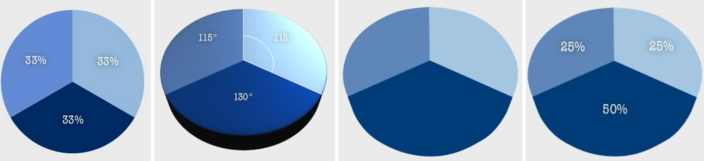

Principles and practice of data visualisation
What to expect
- Why visualizations rather than text
- General principles of visualization
- Grammar of graphics
Why visualizations rather than text
Florence Nightingale and the Crimean War (1850s)

Blue diesease from poor hygiene. Red battle wounds, Black other causes. Nightingale: first female fellow of the Royal Satistical Society, teamed up with a brilliant statistician of poor parents William Farr who lacked Nightingale’s fame and political connections. About lobbying with Queen Victoria: ‘She may look at it because it has pictures.’ 16 000 of the 18 000 deaths were from preventable disease.
John Snow and the cholera epidemy on London

{kind=link}
Thanks to Snow’s visualizations, suspicion fell on water sources rather than ‘bad air’ which was the main suspect of causing cholera until then.
Count all the threes
Source Ware (2012)
Count all the threes now

Source Ware (2012)
We remember better visually

Source Medina (2014)
Sight is our main sense, we see the world through images. We have to decode the text first and then imagine what it means in the abstract.
General principles of visualization
Eduard Tufte
A key figure in the modern approach to visualization of information.
Chartjunk; data : ink ratio; data density; micro - macro reading.
Chartjunk unnecessary decorations, data : ink ratio - trying to maximize, i.e. capture a lot of data using little ink; data density - trying to display as much data as possible while emphasizing the main trends; micro-macro reading from the chart are clear trends, but at the same time offers the possibility of detailed inspection.
General principles of visualization
- Emphasis on data
- Readability
- Integrity
PRINCIPLE 1: Emphasis on data
PRINCIPLE 1: Emphasis on data
Less is more. Graphs are meant to communicate information effectively, design is meant to support that goal, not obscure it.

Source Harford (2021)
DATA : INK ratio
“Above all else show the data.” (Eduard Tufte)

More is less
Sometimes a little extra ink is worth it…

Do not use 3D charts

This is not just an unnecessary effect, but it actively harms

Do not rely on default
Excel pie chart
Excel pie chart - emphasis

Excel bar chart
BEFORE

AFTER

Excel bar chart - time series
BEFORE

AFTER
Excel Line Chart
BEFORE

AFTER

Excel Likert scale (diverging chart)
BEFORE

AFTER

Excel Likert scale - alternative version (diverging chart)
BEFORE
AFTER

PRINCIPLE 2: Readability
PRINCIPLE 2: Readability
Respect for how human cognition works.

Pie charts are not suitable for making comparisons

{kind=link}
% university-educated in new EU members
Example of improved readability and emphasis
ACTUAL PUBLICATION

SUGGESTION FOR IMPROVEMENT

Schwabish, J. A. (2014) An Economist’s Guide to Visualizing Data
“Small multiples” improve readability of time series
ACTUAL PUBLICATION

SUGGESTION FOR IMPROVEMENT
Schwabish, J. A. (2014) An Economist’s Guide to Visualizing Data
If you have a flexible tool, you can be creative…
Schwabish, J. A. (2014) An Economist’s Guide to Visualizing Data
Careful with this one…

May be useful for two categories
Well-managed data density
Source Financial Times
PRINCIPLE 3: Integrity
PRINCIPLE 3: Integrity
You decide what message visualization brings to the forefront. But you are also responsible for possible distortions or manipulations.
How much are the prices of flats rising?
The big problem with the y axis

Sometimes the y-axis is arbitrary

Sometimes, we just need to “zoom”

SO if the y-axis does not start at 0 …
- … use “line chart” rather than “bar chart”
- … highlight the fact
Should we be the least worried about poverty of all European countries?

Visualizing uncertainty
Data from July 2021

Uncertainty can also be visualized in model estimates
A true visualization, BUT…

General principles of visualization - SUMMARY
Emphasis on data
- Default settings often need to be changed
- Keep only those chart elements that have an informational value
- Do not use 3D charts
- Think about what you want the chart to say
Readability
- Respect human cognition
- Horizontal chart labels are better than vertical
- Think about the context in which the reader encounters the chart
- Be inspired by creative approaches
Integrity
- Be careful with the y-axis
- Communicate the meaning of what you visualize
- Take into account the degree of uncertainty
Emphasis on data The data does not speak for itself, you decide what you want visualization to highlight (but you must not manipulate); use colors as a carrier of information, not as an ornament; Readability If possible, describe the data directly in the chart; minimize the use of pie charts); Customize your visualization to your purpose (easier for presentations, more complex to articles); The figure caption on the slide does not have to just name the displayed topic, it can tell a story. In the article, we mostly tell the story in text.
Visualization architecture (grammar of graphics)
Leland Wilkinson and ‘The Grammar of Graphics’ (book)
What makes a good visualization? Individual components…
- Data
- Variables
- Algebra
- Scale
- Geometry (line chart, bar chart, …)
- “Aesthetics” (colors, shapes, saturation, …)
- …
Hadley Wickham and developing a software solution of Wilkinson’s ideas

ggplot2
Seven chart layers. Three required:
-
Data
-
Aesthetics - mapping information to color, shape, saturation, …
-
Geometry - graphic elements that represent data
Four “extra”:
-
Facets (small multiples)
-
Aggregated statistics (e.g. regression curve)
-
Coordinate editing (e.g. logarithmic scale)
-
Theme (theme) - chart design
Data
# A tibble: 6 × 8
species island bill_length_mm bill_depth_mm flipper_l…¹ body_…² sex year
<fct> <fct> <dbl> <dbl> <int> <int> <fct> <int>
1 Adelie Torgersen 39.1 18.7 181 3750 male 2007
2 Adelie Torgersen 39.5 17.4 186 3800 fema… 2007
3 Adelie Torgersen 40.3 18 195 3250 fema… 2007
4 Adelie Torgersen NA NA NA NA <NA> 2007
5 Adelie Torgersen 36.7 19.3 193 3450 fema… 2007
6 Adelie Torgersen 39.3 20.6 190 3650 male 2007
# … with abbreviated variable names ¹flipper_length_mm, ²body_mass_gggplot(data = penguins)
Aesthetics
- Axes
- Outline
- Fill
- Size
- Transparency
- Shape
- …
ggplot(data = penguins,
aes(x = sex))
Geometry
- lines
- points
- columns
- histogram
- boxplot
- …
ggplot(data = penguins,
aes(x = sex)) +
geom_bar()Geometry 2
- lines
- points
- columns
- histogram
- boxplot
- …
ggplot(data = penguins %>%
filter(!is.na(sex)),
aes(x = sex,
y = bill_length_mm)) +
geom_boxplot() +
theme_classic()Galery 1

Galery 2

Galery 3

Galery 4

Galerie 5

Courtesy
This presentation naturally draws on a hard-to-imagine volume of work of a hard-to-imagine number of people.
Nevertheless, I would especially like to thank Petr Bouchal. With him, in 2016, we prepared a course on the methodology of science at the summer academy for high school students Discover, where we devoted a lot of space to visualization. Petr was also a guest lecturer in my courses at Faculty of Arts, CU, and it was only during his lectures that I fully appreciated the value of seeing visualization as a full-fledged auxiliary scientific discipline. I became acquainted with a number of examples in this presentation thanks to Petr
Additional resources - principles and applications
- Jonathan Schwabish - blog
- The Economist and the daily charts
- Hans Rosling’s Gapminder
- Office for National Statistics - Presenting data
- (CZ language) Six tips for good visualizations by Průvodce evaluátora - Collection of evaluation tips and recommendations
- The Data Visualization Checklist
- Selected principles discussed at the blog by a data journalis at the Economist
- Makeover Monday
- Excel charts
- Visualization fuck-ups - for a laugh
Additional resources - working with ggplot2
- Some lectures of the course I co-teach Introduction to data analysis in R
- Chapter Graphics for Communication in the book R for Data Science
- The book ggplot2 by Hadleyho Wickhama
- Big galery of charts in ggplot2 including the code how they were created
- As part of the galery website mentioned in the bullet above, you can also find an interesting overview of theoretical visualizations tips
Referenced literature and other sources
If the resources referenced in the presentation are not interactive (they do not contain a link directly to their location), you can find them in the list here: